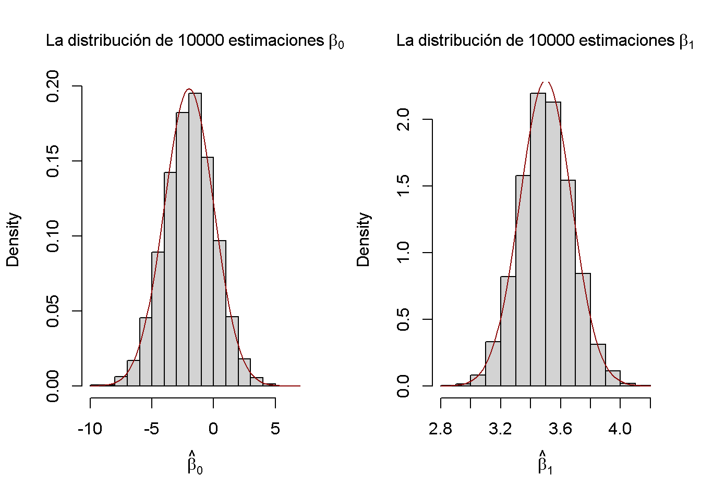
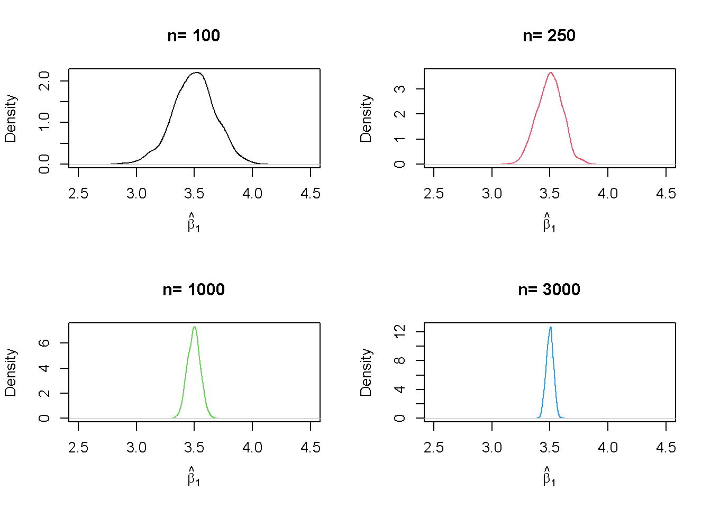
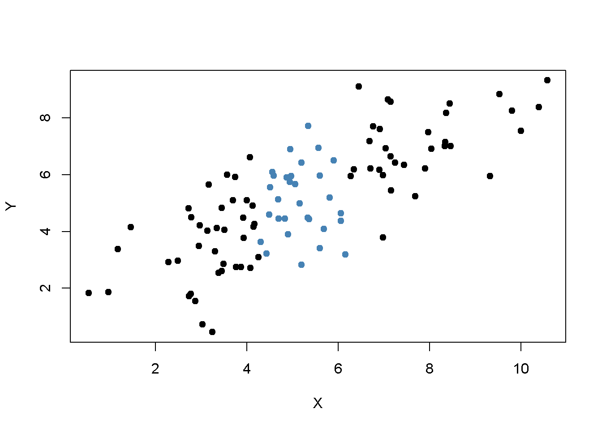
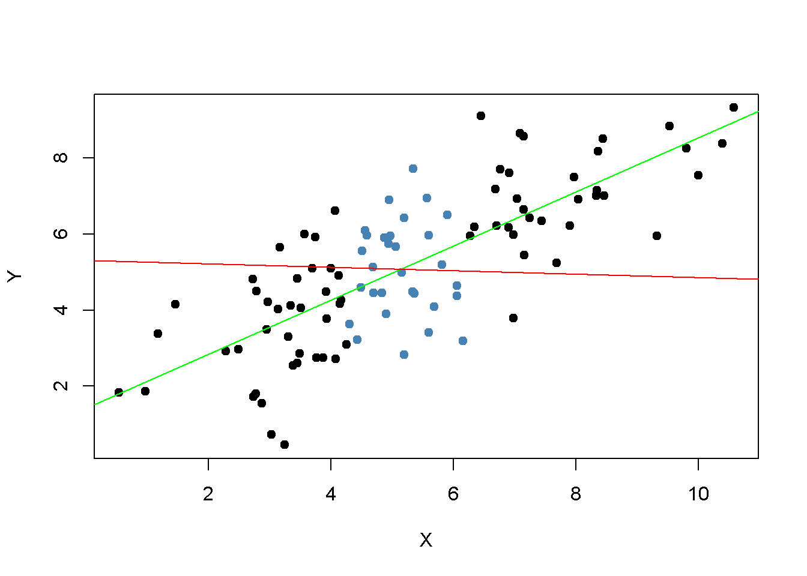

5.5 La distribución muestral del estimador de MCO
Como \(\hat{\beta}_0\) y \(\hat{\beta}_1\) se calculan a partir de una muestra, los estimadores en sí mismos son variables aleatorias con una distribución de probabilidad, — la denominada distribución muestral de los estimadores — describe los valores que podrían tomar en diferentes muestras. Aunque la distribución muestral de \(\hat\beta_0\) y \(\hat\beta_1\) puede ser complicada cuando el tamaño de la muestra es pequeño y generalmente cambia con el número de observaciones, \(n\), es posible, siempre que se cumplan los supuestos discutidos sean válidos, para hacer ciertas declaraciones sobre lo que se mantiene para todos los \(n\). En particular
\[ E(\hat{\beta}_0) = \beta_0 \ \ \text{and} \ \ E(\hat{\beta}_1) = \beta_1,\]
es decir, \(\hat\beta_0\) y \(\hat\beta_1\) son estimadores no sesgados de \(\beta_0\) y \(\beta_1\), los parámetros verdaderos. Si la muestra es lo suficientemente grande, según el teorema del límite central, la distribución muestral conjunta de los estimadores está bien aproximada por la distribución normal bivariada (2.1). Esto implica que las distribuciones marginales también son normales en muestras grandes. Los datos básicos sobre las distribuciones de muestras grandes de \(\hat\beta_0\) y \(\hat\beta_1\) se presentan en el Concepto clave 4.4.
Concepto clave 4.4
Distribución de muestra grande de \(\hat\beta_0\) y \(\hat\beta_1\)
Si se cumplen los supuestos de mínimos cuadrados del Concepto clave 4.3, entonces en muestras grandes \(\hat\beta_0\) y \(\hat\beta_1\) tienen una distribución muestral normal conjunta. La distribución normal de muestra grande de \(\hat\beta_1\) es \(\mathcal{N}(\beta_1, \sigma^2_{\hat\beta_1})\), donde la varianza de la distribución, \(\sigma^2_{\hat\beta_1}\), es
\[\begin{align} \sigma^2_{\hat\beta_1} = \frac{1}{n} \frac{Var \left[ \left(X_i - \mu_X \right) u_i \right]} {\left[ Var \left(X_i \right) \right]^2}. \tag{5.1} \end{align}\]
La distribución normal de muestra grande de \(\hat\beta_0\) es \(\mathcal{N}(\beta_0, \sigma^2_{\hat\beta_0})\) con
\[\begin{align} \sigma^2_{\hat\beta_0} = \frac{1}{n} \frac{Var \left( H_i u_i \right)}{ \left[ E \left(H_i^2 \right) \right]^2 } \ , \ \text{donde} \ \ H_i = 1 - \left[ \frac{\mu_X} {E \left( X_i^2\right)} \right] X_i. \tag{5.2} \end{align}\]
La siguiente simulación interactiva genera continuamente muestras aleatorias \((X_i, Y_i)\) de \(200\) observaciones donde \(E(Y\vert X) = 100 + 3X\), estima un modelo de regresión simple, almacena la estimación de la pendiente \(\beta_1\) y visualiza la distribución de los \(\widehat{\beta}_1\) observados hasta ahora usando un histograma. La idea aquí es que para un gran número de \(\widehat{\beta}_1\), el histograma da una buena aproximación de la distribución muestral del estimador. Al disminuir el tiempo entre dos iteraciones de muestreo, queda claro que la forma del histograma se aproxima a la forma de campana característica de una distribución normal centrada en la pendiente real de \(3\).
(Haga doble clic en el histograma para reiniciar la simulación.)
Estudio de simulación 1
También se puede verificar si las afirmaciones del Concepto clave 4.4 realmente son válidas mediante R. Para esto, primero se construye una población de observaciones de \(100 000\) en total. Para hacer esto, se necesitan valores para la variable independiente \(X\), para el término de error \(u\) y para los parámetros \(\beta_0\) y \(\beta_1\). Con estos combinados en un modelo de regresión simple, se calcula la variable dependiente \(Y\).
En el ejemplo, se generan los números \(X_i\), \(i = 1\), …, \(100000\) extrayendo una muestra aleatoria de una distribución uniforme en el intervalo \([0, 20]\). La realización de los términos de error \(u_i\) se extraen de una distribución normal estándar con parámetros \(\mu = 0\) y \(\sigma^2 = 100\) (se debe tener en cuenta que rnorm() requiere \(\sigma\) como entrada para el argumento sd, consultar ?rnorm). Además, se elige \(\beta_0 = -2\) y \(\beta_1 = 3.5\), por lo que el modelo verdadero es
\[ Y_i = -2 + 3.5 \cdot X_i. \]
Finalmente, se almacenan los resultados en un marco de datos (data.frame):
# simular datos
N <- 100000
X <- runif(N, min = 0, max = 20)
u <- rnorm(N, sd = 10)
# regresión de población
Y <- -2 + 3.5 * X + u
population <- data.frame(X, Y)De ahora en adelante, se consideran los datos generados previamente como la población real (que por supuesto sería desconocida en una aplicación del mundo real, de lo contrario no habría razón para extraer una muestra aleatoria en primer lugar). El conocimiento sobre la población real y la verdadera relación entre \(Y\) y \(X\) se puede utilizar para verificar las afirmaciones hechas en el Concepto clave 4.4.
Primero, se calculan las verdaderas varianzas \(\sigma^2_{\hat{\beta}_0}\) y \(\sigma^2_{\hat{\beta}_1}\) para una muestra extraída al azar de tamaño \(n = 100\):
# establecer el tamaño de la muestra
n <- 100
# calcular la varianza de beta_hat_0
H_i <- 1 - mean(X) / mean(X^2) * X
var_b0 <- var(H_i * u) / (n * mean(H_i^2)^2 )
# calcular la varianza de hat_beta_1
var_b1 <- var( ( X - mean(X) ) * u ) / (100 * var(X)^2)# imprimir variaciones en la consola
var_b0
#> [1] 4.045066
var_b1
#> [1] 0.03018694Suponga ahora que no conoce los valores verdaderos de \(\beta_0\) y \(\beta_1\) y que no es posible observar a toda la población. Sin embargo, se puede observar una muestra aleatoria de \(n\) observaciones. Entonces, no sería posible calcular los parámetros verdaderos, pero se podrían obtener estimaciones de \(\beta_0\) y \(\beta_1\) a partir de los datos de muestra utilizando MCO. Sin embargo, se sabe que estas estimaciones son resultado de variables aleatorias en sí mismas, ya que las observaciones se extraen aleatoriamente de la población. El Concepto clave 4.4 describe sus distribuciones para grandes \(n\). Cuando se extrae una sola muestra de tamaño \(n\), no es posible hacer ninguna afirmación sobre estas distribuciones. Las cosas cambian si se repite el esquema de muestreo muchas veces y se calculan las estimaciones para cada muestra: usando este procedimiento, se simulan los resultados de las respectivas distribuciones.
Para lograr esto en R, se emplea el siguiente enfoque:
Se asigna el número de repeticiones, suponiendo \(10000\), a repeticiones y luego se inicializa una matriz ajuste donde las estimaciones obtenidas en cada iteración de muestreo se almacenan en filas. Por lo tanto, ajuste tiene que ser una matriz de dimensiones repeticiones \(\times2\).
En el siguiente paso, se extraen repeticiones de muestras aleatorias de tamaño n de la población y se obtienen las estimaciones de MCO para cada muestra. Los resultados se almacenan como entradas de fila en la matriz de resultados ajuste. Esto se hace usando un bucle for().
Por último, se estiman las varianzas de ambos estimadores utilizando los resultados muestreados y se grafican los histogramas de estos últimos. También se agrega una gráfica de las funciones de densidad que pertenecen a las distribuciones que se derivan del Concepto clave 4.4. La función bquote() se usa para obtener expresiones matemáticas en los títulos y etiquetas de ambos gráficos. Ver ?Bquote.
# establecer repeticiones y tamaño de muestra
n <- 100
reps <- 10000
# inicializar la matriz de resultados
fit <- matrix(ncol = 2, nrow = reps)
# muestreo de bucle y estimación de los coeficientes
for (i in 1:reps){
sample <- population[sample(1:N, n), ]
fit[i, ] <- lm(Y ~ X, data = sample)$coefficients
}
# calcular estimaciones de varianza utilizando resultados
var(fit[, 1])
#> [1] 4.186832
var(fit[, 2])
#> [1] 0.03096199# dividir el área de graficado como una matriz de 1 por 2
par(mfrow = c(1, 2))
# graficar histogramas de estimaciones beta_0
hist(fit[, 1],
cex.main = 1,
main = bquote(La ~ distribución ~ de ~ 10000 ~ estimaciones ~ beta[0]),
xlab = bquote(hat(beta)[0]),
freq = F)
# agregar una distribución verdadera a la gráfica
curve(dnorm(x,
-2,
sqrt(var_b0)),
add = T,
col = "darkred")
# grraficar histogramas de beta_hat_1
hist(fit[, 2],
cex.main = 1,
main = bquote(La ~ distribución ~ de ~ 10000 ~ estimaciones ~ beta[1]),
xlab = bquote(hat(beta)[1]),
freq = F)
# agregar una distribución verdadera a la gráfica
curve(dnorm(x,
3.5,
sqrt(var_b1)),
add = T,
col = "darkred")
Las estimaciones de varianza apoyan las afirmaciones realizadas en el Concepto clave 4.4, acercándose a los valores teóricos. Los histogramas sugieren que las distribuciones de los estimadores pueden aproximarse bien mediante las respectivas distribuciones normales teóricas establecidas en el Concepto clave 4.4.
Estudio de simulación 2
Otro resultado implícito en el Concepto clave 4.4 es que ambos estimadores son consistentes; es decir, convergen en probabilidad a los parámetros verdaderos que interesan. Esto se debe a que son asintóticamente insesgados y sus varianzas convergen a \(0\) a medida que \(n\) aumentan. Se puede comprobar esto repitiendo la simulación anterior para una secuencia de tamaños de muestra crecientes. Esto significa que ya no se asigna el tamaño de la muestra sino un vector de tamaños de muestra: n <- c(…).
Viendo las distribuciones de \(\beta_1\). La idea aquí es agregar una llamada adicional de for() al código. Esto se hace para recorrer el vector de tamaños de muestra n. Para cada uno de los tamaños de muestra, se realiza la misma simulación que antes, pero se traza una estimación de densidad para los resultados de cada iteración sobre n. Se puede observar que se tiene que cambiar n a n[j] en el ciclo interno para asegurar de que se use el elemento j\(^{esimo}\) de n. En la simulación, se usan tamaños de muestra de \(100, 250, 1000\) y \(3000\). En consecuencia, se tiene un total de cuatro simulaciones distintas que utilizan diferentes tamaños de muestra.
# sembrar la semilla para la reproducibilidad
set.seed(1)
# establecer repeticiones y el vector de tamaños de muestra
reps <- 1000
n <- c(100, 250, 1000, 3000)
# inicializar la matriz de resultados
fit <- matrix(ncol = 2, nrow = reps)
# dividir el panel de la grafica en una matriz de 2 por 2
par(mfrow = c(2, 2))
# muestreo y graficado de bucles
# bucle exterior sobre n
for (j in 1:length(n)) {
# bucle interno: muestreo y estimación de los coeficientes
for (i in 1:reps){
sample <- population[sample(1:N, n[j]), ]
fit[i, ] <- lm(Y ~ X, data = sample)$coefficients
}
# dibujar estimaciones de densidad
plot(density(fit[ ,2]), xlim=c(2.5, 4.5),
col = j,
main = paste("n=", n[j]),
xlab = bquote(hat(beta)[1]))
}
Se encontró que, a medida que aumenta \(n\), la distribución de \(\hat\beta_1\) se concentra alrededor de su media; es decir, su varianza disminuye. Dicho de otra manera, la probabilidad de observar estimaciones cercanas al valor real de \(\beta_1 = 3.5\) aumenta a medida que aumenta el tamaño de la muestra. Se puede observar el mismo comportamiento si se analiza la distribución de \(\hat\beta_0\) en su lugar.
Estudio de simulación 3
Además, la varianza del estimador MCO para \(\beta_1\) disminuye a medida que aumenta la varianza de \(X_i\). En otras palabras, a medida que aumenta la cantidad de información proporcionada por el regresor; es decir, aumentando \(Var(X)\), que se utiliza para estimar \(\beta_1\), se tiene más confianza en que la estimación se acerca al valor real. (es decir, \(Var(\hat\beta_1)\) disminuye).
Se puede visualizar esto tomando muestras de las observaciones \((X_i, Y_i)\), \(i = 1, \dots, 100\) de una distribución normal bivariada con
\[E(X)=E(Y)=5,\]
\[Var(X)=Var(Y)=5\]
y
\[Cov(X,Y)=4.\]
Formalmente, esto se escribe como
\[\begin{align} \begin{pmatrix} X \\ Y \\ \end{pmatrix} \overset{i.i.d.}{\sim} & \ \mathcal{N} \left[ \begin{pmatrix} 5 \\ 5 \\ \end{pmatrix}, \ \begin{pmatrix} 5 & 4 \\ 4 & 5 \\ \end{pmatrix} \right]. \tag{4.3} \end{align}\]
Para realizar el muestreo aleatorio se utiliza la función mvrnorm() del paquete MASS (Ripley 2021) que permite extraer muestras aleatorias de distribuciones normales multivariadas, ver ?Mvtnorm. A continuación, se usa subset() para dividir la muestra en dos subconjuntos de modo que el primer conjunto, set1, consista en observaciones que cumplan la condición \(\lvert X - \overline{X} \rvert > 1\) y el segundo conjunto, set2, incluya el resto de la muestra. Luego se grafican ambos conjuntos y se usan diferentes colores para distinguir las observaciones.
# carga el paquete MASS
library(MASS)
# sembrar la semilla para la reproducibilidad
set.seed(4)
# simular datos normales bivariados
bvndata <- mvrnorm(100,
mu = c(5, 5),
Sigma = cbind(c(5, 4), c(4, 5)))
# asignar nombres de columna / convertir a data.frame
colnames(bvndata) <- c("X", "Y")
bvndata <- as.data.frame(bvndata)
# subconjunto de los datos
set1 <- subset(bvndata, abs(mean(X) - X) > 1)
set2 <- subset(bvndata, abs(mean(X) - X) <= 1)
# graficar ambos conjuntos de datos
plot(set1,
xlab = "X",
ylab = "Y",
pch = 19)
points(set2,
col = "steelblue",
pch = 19)
Está claro que las observaciones que están cerca del promedio muestral de \(X_i\) tienen menos varianza que las que están más lejos. Ahora, si se tuviera que dibujar una línea con la mayor precisión posible a través de cualquiera de los dos conjuntos, es intuitivo que elegir las observaciones indicadas por los puntos negros; es decir, usar el conjunto de observaciones que tiene una varianza mayor que las azules, resultaría en una línea más precisa. Ahora, se usarán los MCO para estimar la pendiente y la intersección para ambos conjuntos de observaciones. Luego se grafican las observaciones junto con ambas líneas de regresión.
# estimar ambas líneas de regresión
lm.set1 <- lm(Y ~ X, data = set1)
lm.set2 <- lm(Y ~ X, data = set2)
# graficar las observaciones
plot(set1, xlab = "X", ylab = "Y", pch = 19)
points(set2, col = "steelblue", pch = 19)
# agregar ambas líneas a la gráfica
abline(lm.set1, col = "green")
abline(lm.set2, col = "red")
Evidentemente, la línea de regresión verde es mucho mejor para describir los datos muestreados de la distribución normal bivariada indicada en (4.3) que la línea roja. Este es un buen ejemplo para demostrar por qué se está interesado en una alta varianza del regresor \(X\): más varianza en \(X_i\) significa más información de la que se beneficia la precisión de la estimación.